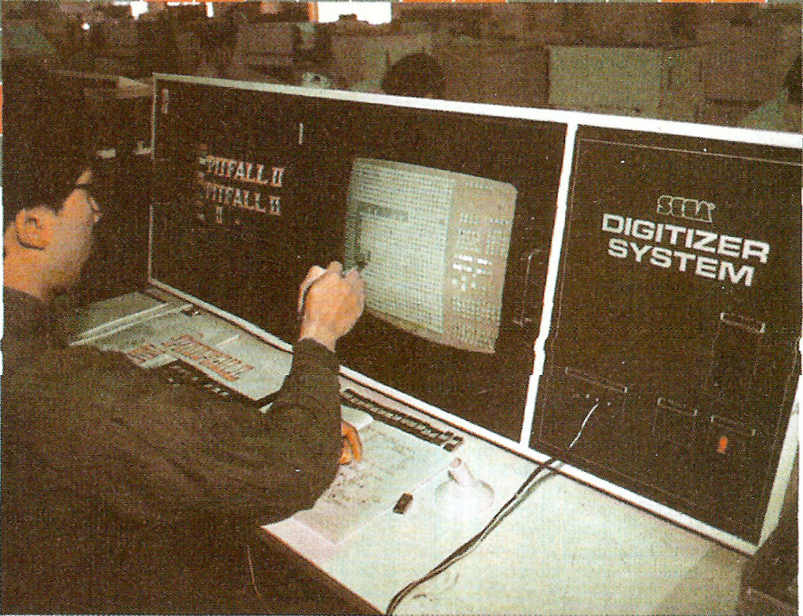
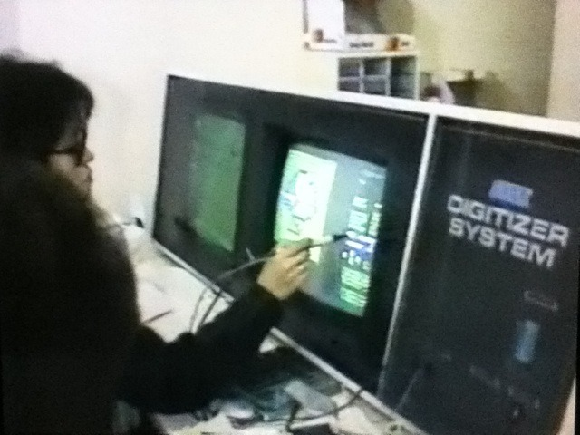
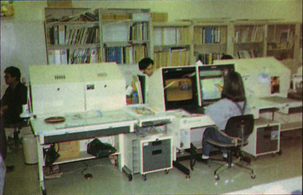
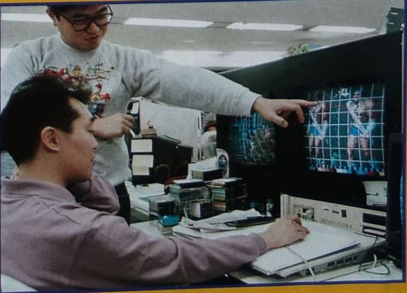
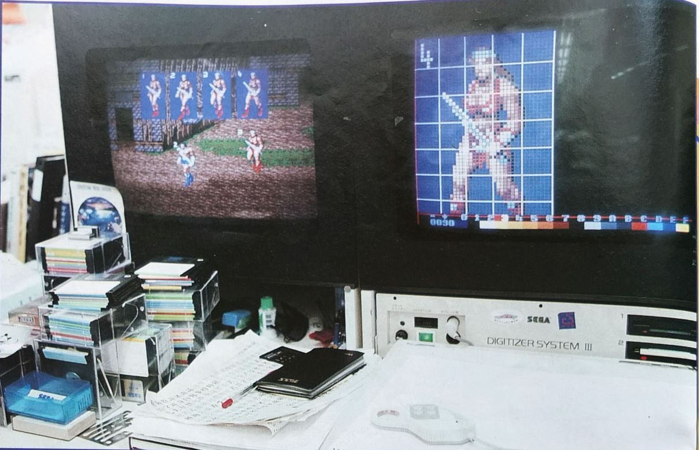
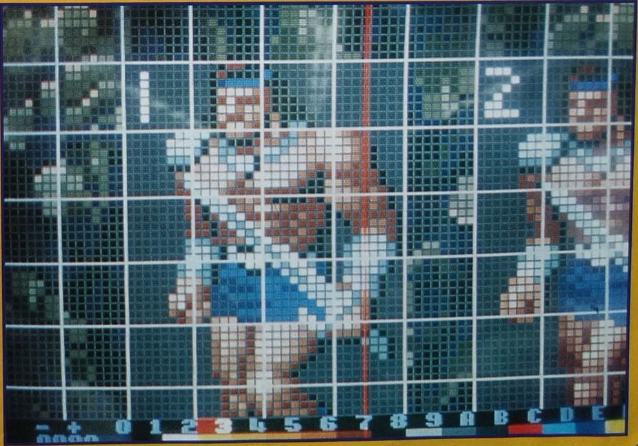
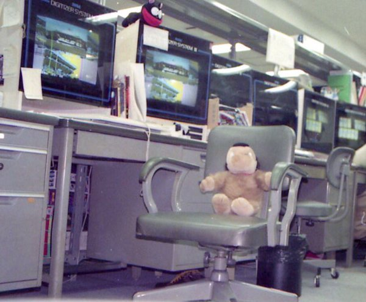
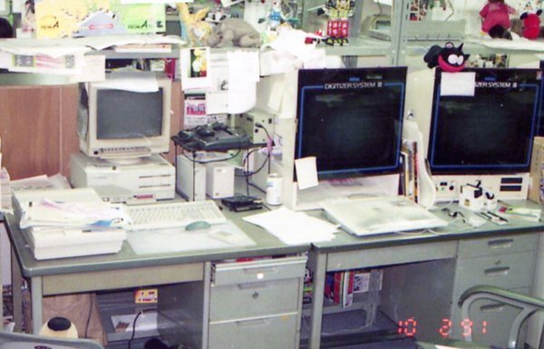
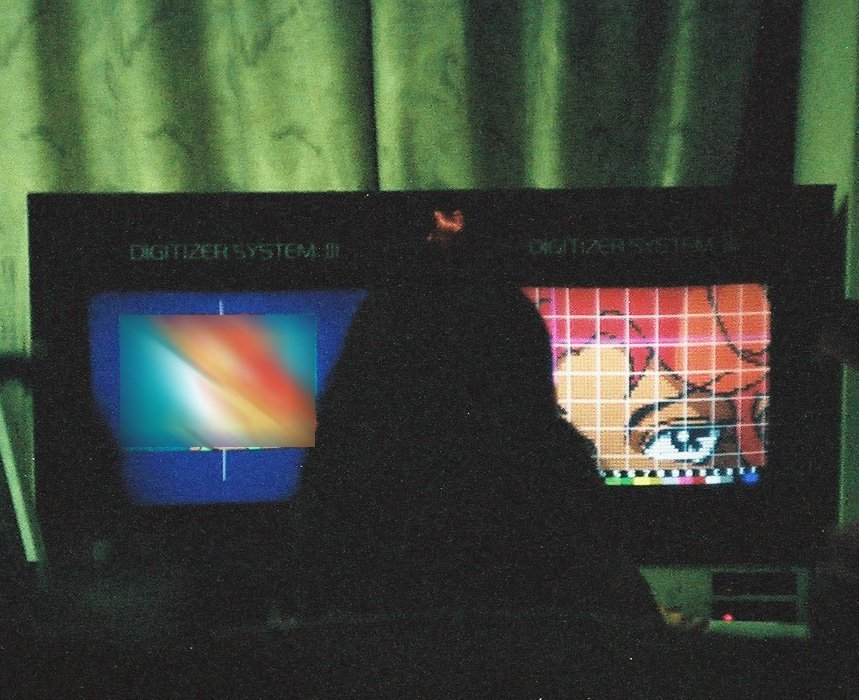

The Sega Digitizer System, a tool used by graphic designers in late 80s/early 90s.
At least 3 versions were made : Digitizer System I, II and III.Sources:
Beep! - April 1985
Arcades 7 - April 1988
Mega Force 4 - January 1992
https://twitter.com/Tonya_Plan/status/765978896768442368
http://p.twipple.jp/zegSe
http://p.twipple.jp/mQpJT
http://www.smspower.org/forums/15288-SegaDigitizerSystemGameDevelopmentIn1986NHKTVProgram